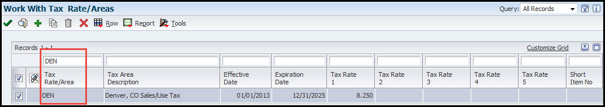
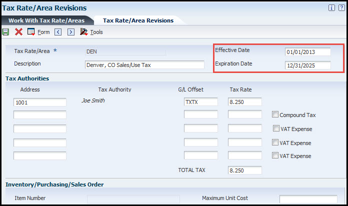

When you create an invoice batch, records are created in the AR Ledger table (F03B11) and General Ledger table (F0911). After you post the batch, the posted code for the AR ledger, if successful, should appear as D and the General Ledger posted code, if successful, should appear as P. An AE entry is created updating your AR trade account. AE entries may also be created to tax accounts. Note: When the General Ledger posts the invoice and creates the AE, the F0902 account ledger is also updated. If you void an invoice, it updates the AR ledger table (F03B11) and creates a revision record in the F03B112.
Scope
N/A
Details
General Ledger Post (R09801) Processing Options
Processing Option Tab
Processing Option Choice(s)
Processing Option Explanation
Print
1. Account Format
Specifies the account format that is displayed on the General Ledger Post (R09801) PDF report.
2. Print Error Messages
Determines if error messages are printed on the General Ledger Post (R09801) PDF. If left blank, error messages are only sent to the Work Center (P012503).
Version
1. Detail Currency Restatement Version
Determines the version of the Detailed Currency Restatement (R11411) program that is used to create currency restatement entries. If left blank, the program does not run and detailed currency restatement entries are not created.
2. Fixed Asset Post Version
Determines the version of the Fixed Asset Post (R12800) program that is used to create fixed asset entries. If left blank, the program does not run and fixed asset entries are not created.
3. 52 Period Post Version
Determines the version of the 52 Period Accounting Post program (R098011) that the system uses to update the Account Balances (F0902) table and the Account Balances - 52 Period Accounting (F0902B) table. If left blank, the program does not run and these tables are not updated.
4. Create Burdening Transactions Version (R52G11)
This option is not valid for AP and AR posting.
Edits
1. Update Transaction
Determines if the Account ID (data dictionary item AID), Company (data dictionary item CO), Fiscal Year (data dictionary item FY), Period Number (data dictionary item PN), Century (data dictionary item CTRY), and Fiscal Quarter (data dictionary item FQ) are updated on unposted records in the General Ledger (F0911). The system updates these values as follows:
The Account ID (AID) and Company (CO) are updated using the value in the Account Number (data dictionary item ANI) field.
The Fiscal Year (FY), Period Number (PN), and Century (CTRY) fields are updated using the value in the G/L Date (DJG).
The Fiscal Quarter (FQ) field is set to blank.
Taxes
1. Update Tax File
Determines if the Taxes table (F0018) is updated when posting transactions with tax information.
2. Update VAT Discounts
Determines if any tax amount fields should be adjusted during posting. The system adjusts the tax amount fields only for transactions with tax explanation code V. To use this processing option, tax rules must be configured for tax on gross including discount and discount on gross including tax.
3. Update VAT Receipts and Write Off
Not used on Accounts Payable side.
Process
1. Explode parent item time
This option is not relevant for posting AP and AR batches, it only applies to posting T (Equipment Time Entry) batches.
Cash Basis
1. Units Ledger Type
Determines the Units Ledger Type the system uses for cash basis entries. The value in this option must be a valid ledger type from the UDC table 09/LT (Ledger Types). If left blank, the system uses the default ledger type ZU.
2. Create Cash Basis Entries Version
Determines the version of the Create Cash Basis Entries (R11C850) program to run. This program is run after the post completes. If left blank, the program does not run and cash basis entries are not created.
Offset Method Options
Automatic Offset Method Y (Detailed) - If you use offset method Y, the posting process creates one offset for each document, even if the invoice document contains both positive and negative pay items. Note. (FRA) Users in France should use offset method Y because it maintains the correct separate debit and credit balances, even if positive documents (invoices) and negative documents (credit memos) are included in the same batch.
Automatic Offset Method S - If you use offset method S, the posting process creates one offset for each pay item, including discounts and tax. Method S creates multiple records in the General Ledger table, but maintains the correct debit and credit balances within the French legal system. This offset method creates a large number of automatic entries, which considerably increases the size of the General Ledger table. In this example, the batch includes an invoice with two items: one for 10,000, and one for 5,000. The batch also includes a credit memo with two items: one for 3,000, and one for 1,000. The posting process created four automatic entries: debits of 10,000 and 5,000 to offset both items on the invoice, and credits of 3,000 and 1,000 to offset both items on the credit memo.
Automatic Offset Method B - When you use offset method B, the system creates a cumulative automatic entry that does not include separate debit and credit totals. Note. (FRA) If offset method B is used to post transactions in France, procedures should be established to control the entry of different types of transactions, such as invoices and debit notes, in the same batch for posting. Although it is a common business practice, businesses in France are not legally required to provide a detailed journal to justify the offset to the bank account for each payment or receipt. If multiple payments and receipts are made on the same bank account, printing one cumulative entry for the bank account is acceptable. If you use offset method B, you can use the Transaction Journal to justify the centralized automatic entries that the system creates when you run the General Journal Report. In this example, the batch includes an invoice with two items: one for 10,000, and one for 5,000. The batch also includes a credit memo with two items: one for 3,000, and one for 1,000. The posting process created one automatic entry: a debit of 11,000 to offset all items. The system uses the batch number as the document number of the automatic offset.
Key to Method Used
This table shows the type of journal entry that the system creates according to the settings in the General Accounting and Accounts Payable Constants (fast path 9K or 4K).
Intercompany (G/A Constants
Offset Method
Journal Entry Creation Method (Summary or Detail)
Journal Entry Create (F0911)
1 (Hub)
B
D
Detail
1
Y
D
Detail
1
S
D
Detail
2 (Detail)
B
D
Detail
2
Y
D
Detail
2
S
D
Detail
3 (Configured Hub)
B
D
Error (not allowed)
3
Y
D
Detail
3
S
D
Detail
1
B
S
Summary
1
Y
S
Detail
1
S
S
Detail
2
B
S
Summary
2
Y
S
Detail
2
S
S
Detail
3
B
S
Error (not allowed)
3
Y
S
Detail
3
S
S
Detail
Offset Method:
Y = One automatic entry offset per document, regardless of the number of line items
S = One automatic entry per pay item
B = One automatic entry per batch
Note: For Accounts Receivable, the Offset method can only be set at the company 00000 level, because it regulates how transactions are created in the F0911. This in turn has an effect on intercompany settlements, and on reconciling transactions. For that reason, you can't have one company with batch offset and another with detail offset.
Understanding GL Date Warnings and Errors (PYEB, PBCO, PACO and WACO)
When you enter a transaction, the system validates the G/L date against the open period in the company constants. If you enter a transaction with a G/L date that is not in the current or next accounting period, you get a warning or an error message.
The following table lists the warning and error messages that the system returns when you enter a transaction outside of the two-period window.
Error Number and Message
Reason
Result
0064 – Prior End Balance Forward Invalid
PYEB = Prior Year End Balance
You tried to enter or post a transaction to a prior fiscal year.
The system returns an error message and does not accept the entry.
0065 – Date is in the current fiscal year but prior month (PBCO).
PBCO = Post Before Cut Off
You tried to enter or post a transaction with a G/L date that is in the current fiscal year, but before the current period.
The system returns either a warning or error message, depending on the setting of the Allow PBCO Postings field in the General Accounting Constants (P000909):
If you have Allow PBCO set to Y, the system returns a warning.
If you have Allow PBCO set to N, the system returns an error.
0066 – Date is in future month of the current fiscal year (PACO).
PACO = Post After Cut Off
You tried to enter or post a transaction with a G/L date that is after the two-period window, but in the current fiscal year.
The system returns a warning message to alert you that the date is in a future period.
0000 – Date is in future fiscal year.
WACO – Way After Cut Off
You tried to enter or post a transaction with a G/L date in a future fiscal year.
The system returns a warning message to alert you that the date is in a future year.
Posting AR Invoices (R09801)
When an invoice batch is posted, the system:
Verifies that the batch has an Approved status.
Verifies that the GL date is the SAME for one invoice in both the Customer Ledger (F03B11) and the General Ledger (F0911).
Searches for invoices that do not have a posted code or that have a posted code of P.
Verifies that a corresponding record exists in the F0911 table and that the amounts balance to the invoice amount.
Creates automatic entries.
Updates the Account Balances (F0902) table.
Changes the posted code on invoices to D.
Changes the posted code on corresponding records in the F0911 table to P.
Changes the posted code on the batch control record to D.
If the system detects an error on one invoice transaction, the entire batch is in error and the system does not post any records. The system sends a workflow message and produces an error report. This diagram illustrates the invoice post process:
Automatic Entries Created by the Invoice Post
When you post invoice batches, the system creates automatic entries to the tax, intercompany settlement, and A/R trade accounts. The offset amount to the A/R trade account is controlled by the AAI item RC. The program uses the company number and the G/L offset from each invoice to locate the AAI item RC. This item contains the offset account to which you are posting. During the post process, the system retrieves this information for the automatic entry record based on the offset method that you specify in the A/R Constants:
Automatic offset amounts.
If the offset method is B, the system accumulates invoice amounts and creates one automatic entry for the entire batch of invoices.
If the offset method is S, the system accumulates pay item amounts and creates one automatic entry for each invoice.
If the offset method is Y, the system creates one automatic entry for each invoice pay item.
Document number.
If the offset method is B, the system assigns the batch number as the document number of the AE entry.
If the offset method is Y or S, the system assigns the document number of the invoice as the document number of the automatic entry.
Account number description.
If the offset method is B, the system writes Accounts Receivable - Trade/Offset by Batch IB (invoice batch number).
If the offset method is Y or S, the system writes Accounts Receivable - Trade/Offset by Document RI (invoice document number).
G/L Date - The system always uses the G/L date of the invoice, regardless of the offset method.
If the invoice includes taxes, the system generates an automatic offset with the same characteristics, except that the account description is from the AAI item RT (receivables tax). It records the tax amount in the Taxes table (F0018), based on a processing option.
Invoices created by sales update (R42800) are created for the company on the sales order header. The RC AAI corresponding to the company on the accounts receivable invoice is validated for the A/R trade account.
Note: Although posting out-of-balance batches prevents the system from creating intercompany settlements, posting out-of-balance does create AE entries to the A/R trade account.
Understanding Revisions to Posted Invoices
After you post an invoice, but before it is paid, you can revise it. For example, after entering, you might need to revise the gross amount or G/L account information. When you revise or void a posted invoice, the system:
Removes the posted code on the invoice.
Adds a record to the Invoice Revisions table (F03B112).
Updates the A/R Post Status field (ISTR) to 1 on the invoice record. The system displays this field in the Revisions Made column on the Work with Customer Ledger Inquiry form. Regardless of the number of revisions you make to an invoice, the Revisions Made column always displays 1.
You can revise these fields on a posted, unpaid invoice:
Gross Amount. The system automatically recalculates the open amount.
Remark
Discount Available. Note: If you clear this field, the system automatically recalculates the discount amount based on the payment term.
Due Date
Discount Due Date
PS (Pay Status). Note: You cannot change the pay status if the value is P (paid).
Any revision that you make to an invoice on the Standard Invoice Entry form changes the status of the batch from posted to unposted and requires you to repost it. To eliminate the necessity of reposting the batch, use Speed Status Change to revise information that does not affect the invoice gross amount or G/L account information. If you need to change information in any other field, you must void and re-enter the invoice.
Understanding Invoice Voids
To remove a posted invoice or invoice pay item from the general ledger, you must void it and then post the batch again; you cannot delete a posted invoice. When you void an invoice, you specify the G/L date to use to reverse the entries from the general ledger. You can void an invoice from either the Work with Customer Ledger Inquiry or Standard Invoice Entry form.
If you void an invoice pay item only, you must use the Standard Invoice Entry form, and you cannot specify a void G/L date; the system always uses the G/L date on the invoice. When you void an invoice, the system:
Updates the gross amount to zero.
Removes the posted code from the invoice
Updates the payment status code to P (paid).
Creates a record in the F03B112 table as an audit trail for the change in gross amount.
Updates the A/R Post Status field (ISTR) in the Customer Ledger record (F03B11) to 1.
The system displays the value of this field in the Revisions Made column in Customer Ledger Inquiry. After you void an invoice, you must post the batch again. To void a paid or partially paid invoice, you must first void the customer's payment.
Note: You cannot void invoices with these document types: R1, RU, RB, and R5. These types of invoices are generated from the receipt applications and have a batch type of RB, not IB. The system creates these documents with a posted code of D, regardless of whether the receipt batch is posted.
Revising Posted Invoices
Access the Work with Customer Ledger Inquiry form. To revise posted invoices:
Locate the invoice that you want to revise, and then click Select.
On Standard Invoice Entry, revise the information in any available field, and then click OK. If you change the gross amount, you might need to revise the discount amount. The system does not recalculate the discount when you change the gross amount. If you change the gross amount, the system displays the G/L Distribution form automatically.
On the G/L Distribution form, complete the Account Number and Amount fields on a new grid line to create a balancing entry. Enter the amount as a credit.
To revise general ledger information only, on Standard Invoice Entry, select G/L Distribution from the Form menu, revise the desired fields, and then click OK.
Voiding a Posted Invoice
Access the Work with Customer Ledger Inquiry form. To void a posted invoice:
Locate the invoice that you want to void, and then click Delete. Important! If you select an invoice with multiple pay items, the system voids all pay items.
On Confirm Delete, click OK.
On Enter Void Information, complete the Void G/L Date and Invoice Revision Code fields, and then click OK.
On Void Confirmation, click OK to confirm the void.
To verify the void, locate the voided invoice on Work With Customer Ledger Inquiry, and click Select to access Standard Invoice Entry.
To review the amounts that the system reversed in the Customer Ledger, select Invoice Revisions from the Row menu on Standard Invoice Entry.
To review the reversing entries that the system creates in the F0911 table when you void an invoice, select G/L Distribution from the Form menu on Standard Invoice Entry. For Void G/L Date field enter the date to which the system posts voided transactions. Do not enter a G/L date for a previous or future period. For the Invoice Revision Code field enter the code that identifies the reason that an invoice pay item was voided.
Voiding a Posted Invoice Pay Item
Access the Standard Invoice Entry form. To void a posted invoice pay item:
Select the invoice pay item that you want to void, and click Delete.
On the Confirm Delete form, click OK.
On the Enter Void Information form, complete the Invoice Revision Code field, and click OK.
On the Void Confirmation form, click OK to confirm the void.
On the G/L Distribution form, complete the Account Number and Amount fields on a new detail line to create a balancing entry. Enter the amount as a credit.
Posting to Prior Period (R09801)
Occasionally, batches must be posted to a closed period that is several months back or even in a prior year without affecting financial statements or reports that have been processed for the closed period or year. This document provides steps to posting batches to a prior closed period or year. The process described has a zero dollar effect on the General Ledger balances for the prior period or year and updates the current period with the batch balances.
Note: It is very important these steps are followed when all other users are out of the system because the current period for posting is affected. The Posting Edit Code (data dictionary item PEC) of the trade account may also be a factor.
Steps to Post to Prior Period
These steps take into account the following example, please adjust instructions to fit your specific case:
Example: A invoice was created and posted with a GL Date (data dictionary item DGJ) of 10/01/2001. Using the fiscal date pattern of `R' for a regular calendar year this would be period 10. The business process requires that the entries be entered in November (period 11) instead of October. Because the GL Date (DGJ) of a invoice cannot be changed, the steps provided in this document must be followed.
Open Work with Companies (P0010) on the Organization & Account Setup (G09411) menu.
Locate the company or companies involved in the batch that needs posting, including companies involved in the GL Distribution of the voucher or payment.
Change the Current Period for General Accounting, Accounts Payable and Accounts Receivable modules for each of the companies found in step 2 back to period 10 (October).
After modifying the Current Period, log out of the system. This step is necessary because the information in this application is cached.
Log back in.
Post the batch.
Open Revise Single Account (P0901) on the Organization & Account Setup menu (G09411) and verify that the Posting Edit Code (data dictionary item PEC) allows manual entry to the affected trade account. In the standard setup for a trade account, the Posting Edit Code (PEC) is typically set to `M' (machine-generated transactions only). If this is the case, change the value to blank. Changing this value will temporarily allow all postings to this account.
In Standard Journal Entry (P0911) on the Journal Entry, Reports, Inquiries (G0911) menu, enter a reversing entry with an October GL Date (DGJ). This entry should offset the original entries posted for the original record. Verify that the Reverse radio button is checked. By marking the reverse radio button, the system automatically creates a reversing entry on the first day of the next period. In this case, the reversing entry will be created for 11/01/01. The net effect of these entries is $0. The journal entry should look have information in the F0911 as follows:
AP Trade XX (Debit)
Expense XX (Credit).
Post the Journal Entries. Use data selection to specify the batch number.If the Posting Edit Code (PEC) was changed in Step 7, change it back to 'M' using Review and Revise Accounts (P0901).
In Company Names and Numbers, set the Current Period back to 11 (November) for all Modules. Because this information is cached, remember to log off so the change takes effect.
Posting to Prior Year (R09801)
Occasionally, batches must be posted to a closed period that is several months back or even in a prior year without affecting financial statements or reports that have been processed for the closed period or year. This document provides steps to posting batches to a prior closed period or year. The process described has a zero dollar effect on the General Ledger balances for the prior period or year and updates the current period with the batch balances.
Steps to Post to a Prior Year
Identify the GL Dates (data dictionary item DGJ) and Companies (data dictionary item CO) included in the unposted batch.
Using Work with Companies (P0010), determine the fiscal period and fiscal year corresponding to the batch's GL Dates.
Determine a time when either dates or constants may be changed to allow for prior period postings. This process should be run outside of business hours because it requires that no other batches are created or posted.
Determine the best method to use for posting the problem batch and make necessary change. There are two possible options:
In Work with Companies (P0010), change the affected companies' Accounts Payable, Accounts Receivable and General Ledger periods and fiscal year (if necessary) to the earliest periods and fiscal years identified in Step 2.
If the unposted batch is in the current fiscal year, change the value of the Allow PBCO Postings (data dictionary item PBCO) field in the General Accounting Constants (P0000) to Y. This modification allows updates to prior periods without having to change the dates for each company.User must log out and back in for the change to take effect.
Approve and post the batch. Retain the PDF of the General Ledger Post (R09801) generated during the post. It lists all journal entries created in the General Ledger (F0911) for the batch.
Adjusting Amounts to Reflect in Current Period
After a batch is posted to a prior period, these amounts need to be removed from the prior period and included in the current period. To do so, follow the steps below.
Determine if any of the GL Accounts listed on the PDF need the Posting Edit Code (data dictionary item PEC) updated to allow manual journal entries:
Using Review and Revise Accounts (P0901), inquire on the account(s).
If the Posting Edit Code (PEC) is set to 'M' (machine-generated transactions only), temporarily change it to blank.
Go to Standard Journal Entry (P0911).
Create a Journal Entry with the amounts opposite of the original entry and the account numbers are the same as above, for the prior period in question.
Repeat Step 3 for every entry created by the post report.
Post the manual journal entries while the prior period is still open. The prior period should have a zero net change to the General Ledger and all batches should be posted.
After the batch is posted, revert back to the current period by either of the two methods:
In Work with Companies (P0010) change the affected companies' Accounts Payable, Accounts Receivable and General Ledger periods and fiscal year (if necessary) back to the current period and year.
If the Allow PBCO Postings (PBCO) field in the General Accounting Constants (P0000) is Y, change it back to N. Log out and log back in for change to take effect.
Go back into Standard Journal Entry (P0911) and inquire on the manual journal entries created in Step 3.
Void all manual journal entries, using the current period.
Approve and post the batch.
Reverse Step 1 by changing the Posting Edit Code (PEC) for all affected accounts back to 'M' using Review and Revise Accounts (P0901).
Run integrity reports, if desired, to ensure no other integrity issues exist.
Example The example below is the General Ledger portion of an Accounts Payable payment to a prior period and year. Posting Journal entries would be:
GL Date: 11/30/2003
Cash in Bank: 100.1110.BEAR 100.00
AP Trade Acct: 100.4110 <100.00>
After posting the batch, create a manual journal entry using Standard Journal Entry (P0911) for the following:
GL Date: 11/30/2003
Cash in Bank: 100.1110.BEAR <100.00>
AP Trade Acct: 100.4110 100.00
Note: that the amounts are opposite of the original posting entry.
The final step to moving the amounts from the prior period and year to the current period and year. After the manual entry above is posted in the prior period, it must be voided in the current period. The following entry is created at the completion of Step 8:
GL Date: 01/31/2004
Cash in Bank: 100.1110.BEAR 100.00
AP Trade Acct: 100.4110 <100.00>
Batch Approval and Post Security (P00241)
Batch Approval allows management to control which users are permitted to post transaction batches. This functionality utilizes two lists of users that are defined by management to help secure the posting process:
Secured Users: users included on this list are unauthorized to approve and post batches.
Approved by Users: users on this list can approve and post batches on behalf of secured users.
Automatic Entries (AEs) should be system-generated by the General Ledger Post (R09801), however, it may be necessary to create an AE manually if the system fails to create it and the Account Ledger table (F0911) records have been posted. This is done by creating one-sided journal entries. To determine if the AE was created, run a General Journal by Batch (R09301) report by batch number only (Journal Entry, Reports, Inquiries menu (G0911)). This UBE displays which records were created and which records were posted.
Caution: Only create AEs when there are posted F0911 records and the offsetting AE is missing.
How to create Manual AE(s) to get a posted batch in balance:
During off peak hours when no one is posting batches go to menu G09411 (Organization Account Setup menu) select Revise Single Account (F0901). Inquire on the appropriate company's Accounts Payable or Accounts Receivable trade account. Temporarily remove the M (machine generated transactions only) from the Posting Edit field. This will allow the posting of the manual entry.
On the Journal Entry, Reports, Inquiries menu (G0911), select Journal Entry (P0911). Click the Add button.
Create the journal entry by populating these fields:
Document Type - AE
Document Number - Original batch number (if posting in summary) or original document number (if posting in detail)
Document Company - Company number used on the records in the batch
GL Date - Original GL date of the batch
Caution: If the offset method in the Accounts Receivable Constants is B (one offset per batch), then use the last date of that period. If the offset method is Y (one offset per record), then use the GL date of the corresponding record.
Verify that this GL period is open or that the (allow PBCO posting) field in the GL constants (P0000) is checked so the record can be posted.
Account Number - Appropriate trade account
Amount - Amount for the missing AE. Refer to the General Journal by Batch report (R09301) to determine if it needs to be a debit or credit.
Choose the Features form exit. Check the Out of Balance JE Mode box. Click OK twice.
Note the batch number, then select General Journal Review (P0011). Inquire on the batch, highlight it, select the Revise row exit, choose the Overrides form exit, then check the Allow Batch to Post out of Balance box.
Post the batch and verify that the entry is correct by reviewing the General Ledger Post Report (R09801).
On the Organization Account Setup menu (G09411), select Revise Single Account (F0901). Inquire on the appropriate company's Accounts Payable or Accounts Receivable trade account. Enter M (machine generated transactions only) in the Posting Edit field.
To add the new entry to the original batch, use a database tool, such as SQL, to change these F0911 fields:
If the new AE is for a void entry and/or if another AE exists, change this new AE's Journal Entry LineNumber (JELN) to a unique number.
Change Batch Number (ICU) to the original batch number.
Change Batch Type (ICUT) from G to the appropriate batch type (IB for a invoice batch).
Run the General Journal by Batch report for the original batch number again to confirm the batch contains the new AE and that the batch is in balance.
Optional: Delete the batch header for the new journal entry since it is no longer needed. Running the Batch to Detail and Out of Balance integrity report (R007031) will automatically delete the empty batch header.
Run A/R Invoices to GL by Batch Integrity (R03B701) or AR to Account Balance by Account ID (R03B707) on the Period End Processing menu (G03B21). If this batch is not displayed, the AE entry and the batch is correct.
Note: If you select "Allow batch to post out of balance" checkbox in P0011 application but do not make the SQL updates, please ensure that you exclude the batch from integrity reports by checking the "Exclude batch from integrity report" option.
Understanding Multi-Currency
This document discusses JD Edwards EnterpriseOne records that involved multi-currency or an environment with multi currency turned on. It is important to share important documentation that further explains how multi currency is setup. Please refer to the references below:
For Multi-currency setup see knowledge <Document 664684.1> - E1: 11: Overview of Activating Currency in a Non-Currency Environment and/or
Summary Of Domestic Versus Foreign Currency Transactions
The relationship between the base currency of a company and the transaction currency of a voucher determines whether the voucher is a domestic currency transaction or a foreign currency transaction. When you enter a voucher, the currency of the company determines the base (domestic) currency of a voucher, whereas the currency of the voucher determines the transaction currency. To process vouchers in multiple currencies, you must assign a domestic currency code to every company in the Company Names & Numbers program (P0010). The currency code of a company determines the base currency of the voucher during voucher entry.
Domestic Entry
A voucher is a domestic currency transaction when the transaction currency is the same as the base currency of the company that you enter on the voucher record. When you enter a domestic voucher, the system does not update or display foreign amount fields as there are no foreign amounts involved in the transaction.
For example, assume that the base currency of a company is U.S. dollars (USD). You enter a voucher for that company and assign a transaction currency of USD. The base currency of the company is the same as the transaction currency of the voucher. Therefore, the voucher is domestic.
Foreign Entry
A voucher is a foreign currency transaction when the transaction currency is different from the base currency of the company that you enter on the voucher record. The voucher has a foreign amount (based on the currency of the transaction) and a domestic amount (based on the base currency of the company). The system calculates the domestic amount of a transaction using the exchange rate from Currency Exchange Rates (F0015) or the exchange rate defined on the voucher record.
For example, assume that the base currency of a company is USD. You enter a voucher for that company and assign a transaction currency of Japanese yen (JPY). The base currency of the company is different from the transaction currency of the voucher. Therefore, the voucher is foreign.
Tax Explanation Summary
You might be required to calculate, pay, collect, and track taxes on vouchers. When this is necessary, you need to enter a tax explanation code on the transaction. You can enter the tax explanation code on the transaction entry form, or let the system use a default tax explanation code that you set up on the on the supplier master record. For full understanding on tax setup within JD Edwards EnterpriseOne, refer to our release 9.1 online guide.
Key Tax Programs
Below are the key tax programs you may need to review to determine if the setup is the cause of the tax calculation and/or voucher batch (V) post failure.
Tax Rules
Tax Query (P4008)
This helps you see how many of the same tax/rate area you have and their effective dates, which should not overlap.

Note - Your Tax/Rate Area should never be deleted as this will cause data integrity issues. Your tax/rate area should be expired if you have a tax rate to use as of a specific date.
Tax Rate/Area Details (P4008)

Note - To troubleshoot tax related records, you will want to review the guide linked above so you know how each Tax Explanation code calculates the totals and what lines are created in the A/P Ledger (F0411) and in the General Ledger (F0911) before and after post. This troubleshooting document is using Sales Taxes in the out of balance post failure example.